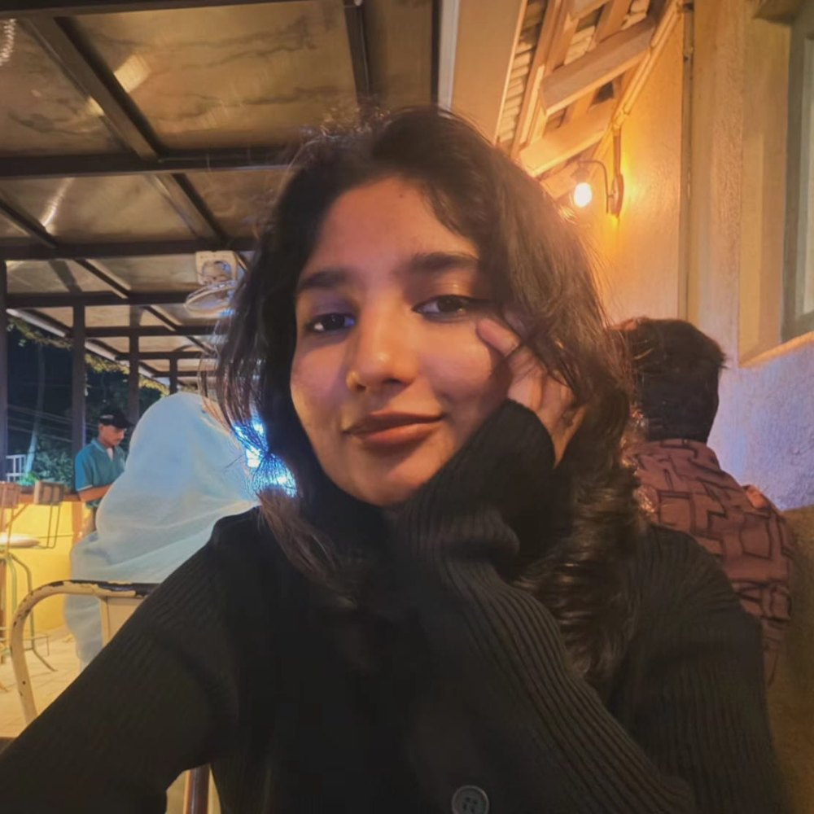
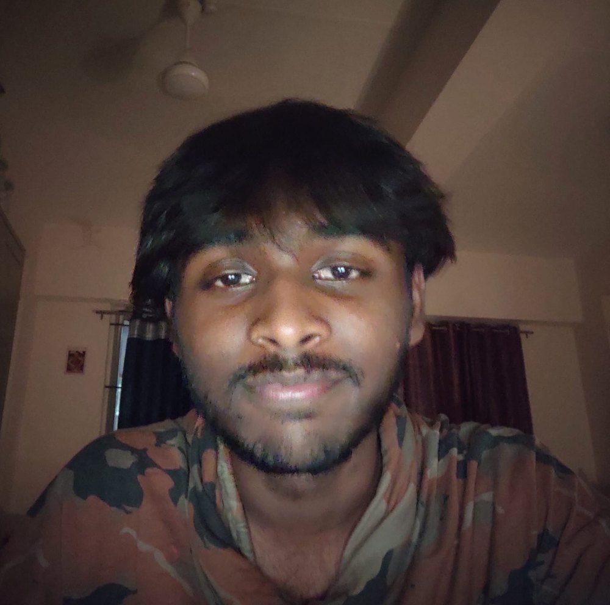
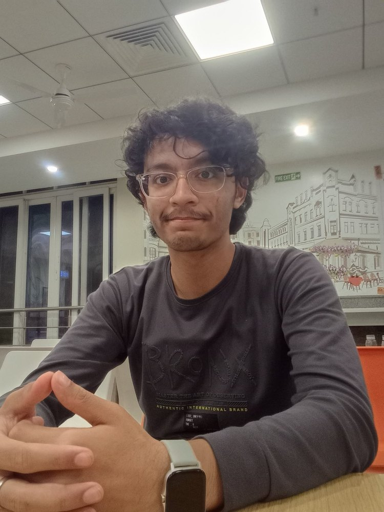
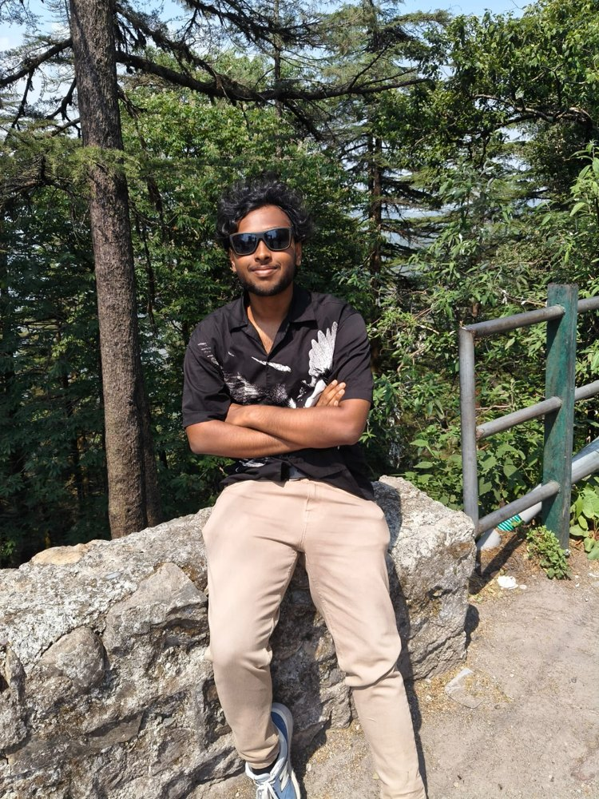
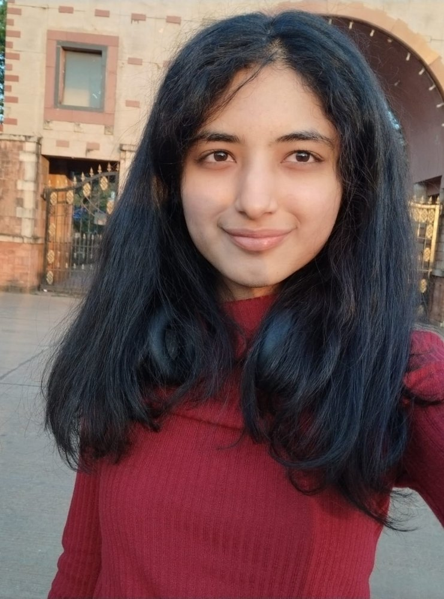

Amitha Reddy Kota
Mathematics and Computing student at IIT Dharwad passionate about machine learning, NLP and retrieval systems. Skilled in Python, C and SQL; loves hackathons, research and building projects.
The people behind this project.


Mathematics and Computing student at IIT Dharwad passionate about machine learning, NLP and retrieval systems. Skilled in Python, C and SQL; loves hackathons, research and building projects.

B.Tech Mathematics and Computing student at IIT Dharwad with a strong interest in machine learning, data science and problem solving. Skilled in C, Python, NumPy, Pandas, Matplotlib, basic DSA, HTML and CSS, and currently exploring time-series analysis and deep learning.

Sophomore pursuing B.Tech in Mathematics and Computing at IIT Dharwad, interested in competitive programming, building impactful machine learning systems and low-level programming. Has worked individually and in teams on multiple hackathons.

Sophomore pursuing B.Tech in Mathematics and Computing at IIT Dharwad, interested in research in quantitative finance, machine learning and data engineering. Skilled in C, C++, Java, Python, Pandas, NumPy and Matplotlib.

Mathematics and Computing student at IIT Dharwad (Class of 2029), passionate about problem solving and skilled in C, C++ and Python with a strong grip on data structures and algorithms. Loves LeetCode in free time.